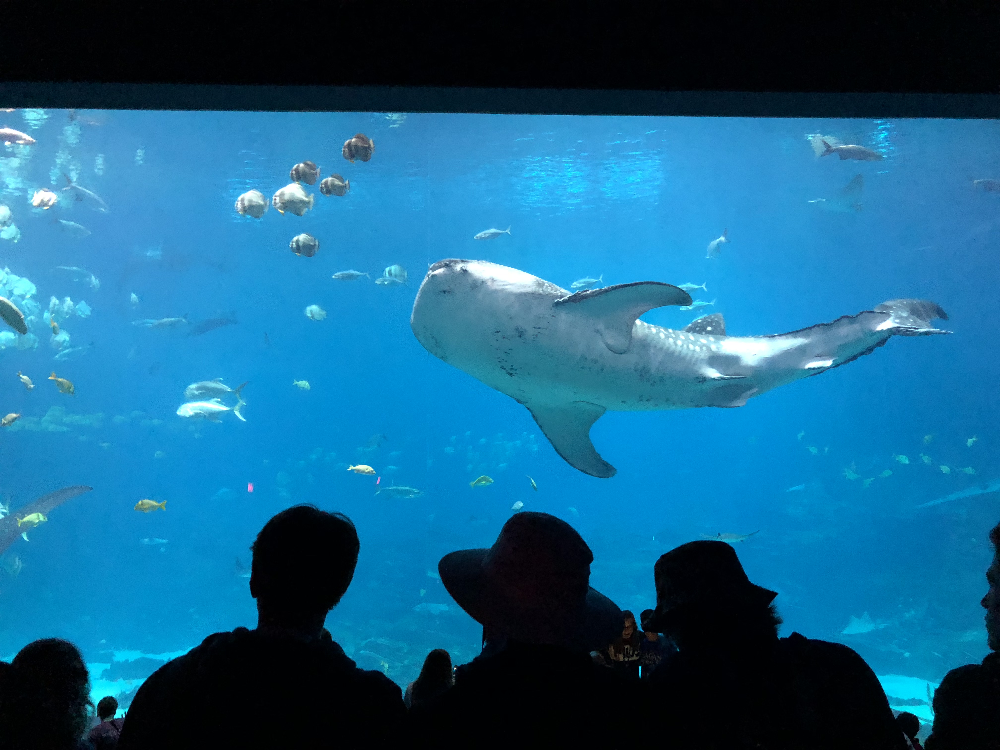

Below you will find my resume. If you have any questions regarding my resume, feel free to submit a question under the "questions" tab located in the naviagation bar above.
EDUCATION:
I have acquired an unweighted GPA of 3.964. I take all AP, CIS, and honors level courses at school. In addition, I have participated in numerous activities provided through the school. Such activities include girls golf team, dance team, dance show, cheerleading, DECA, National Honors Society, National Spanish Honors Society, and Tri M.
WORK EXPERIENCE:
-Rich Valley Golf Club summer junior league assistant
-Nanny (full time summer nanny and part time school year nanny)
EXTRACURRICULARS:
*GIRL'S GOLF*
2018 Member of Junior Varsity Team
2017 Member of Club Team
*CHEERLEADING*
2018 Member
*DANCE SHOW AT RHS*
2018 and 2019 Member
*NATIONAL HONOR SOCIETY*
2018-2019 Member
*NATIONAL SPANISH HONOR SOCIETY*
2017- 2019 Member
*TRI M HONOR SOCIETY*
2018-2019 Member
*DECA*
2016-2019 State Competition Participant
2018-2019 Officer
2018-2019 National Qualifier
AWARDS:
.
-Three time academic letter award recipient
.
-Athletic letter award recipient for Rosemount High School Cheerleading, 2017
.
-Three time Scholar Athlete award recipient for Rosemount High School Girls Golf, 2017, 2018
.
-Scholar Athlete award recipient for Rosemount High School Cheerleading, 2017
.
-DECA: Three time Minnesota state qualifier in Business Services Marketing, 2017, 2018, 2019
.
-DECA: Two time national qualifier in Business Services Marketing, 2018, 2019
.
-DECA: First Place in Business Services Marketing at DECA districts Minnesota, 2019
.
-DECA: Top Eight in Minnesota Business Services Marketing, 2018, 2019
.
-DECA: Top Test Score Award for the Marketing Cluster Exam, 2019
.
-DECA: Minnesota DECA Outstanding Recognition Award Career Development Conference, 2019
.
-Ap Scholar Award with Honor, 2019
.
-Dance letter award
VOLUNTEERING:
*NATIONAL HONOR SOCIETY*
Twelve hours of community service per trimester(2019)
*NATIONAL SPANISH HONOR SOCIETY*
Three hours of Spanish volunteering at immersion and magnet schools: Adams Spanish Immersion School, St. Paul, MN and Diamond Path Elementary School, Apple Valley, MN (2018, 2019)
*TRI M HONOR SOCIETY*
Two hours of art related volunteering at Rosemount High School per year (2018-2019)